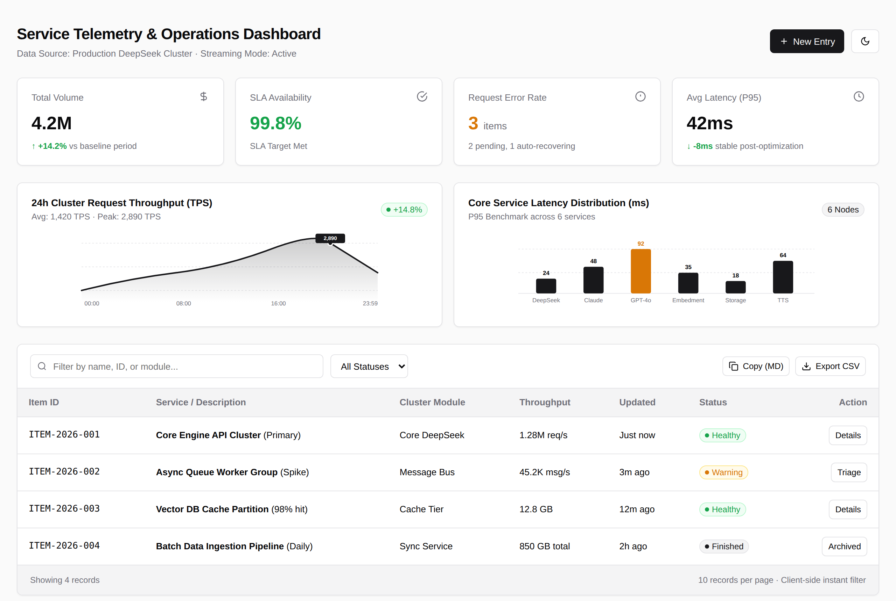

Your agent just answered with a wall of Markdown.
Or HTML that breaks offline.
✕ blank page offline
Clean, single-file HTML
for your coding agents.
for your coding agents.
Zero npm · zero CDN · opens offline with a double-click
$Copy
✓Claude Code
✓Cursor
✓Codex
✓Pi
✓70+ agents via skills.sh
7 templates.
Zero guesswork.Pick a layout instead of letting the model improvise one.
Zero guesswork.Pick a layout instead of letting the model improvise one.
Built for the loop between you and your agent.

☀ Light
☾ Dark, built in
0 npm · 0 CDNOne file. Opens offline, in any browser, forever.
Copy back to your agentVerdicts, triage and forms export as Markdown.
8 pure-SVG chartsPlus 32 icons, tabs and form controls. No chart libraries.
Lint-gated outputAn offline validator checks every page before you see it.
Stop shipping
walls of Markdown.
walls of Markdown.
$npx skills add QingYunA/agent-htmlCopy
▶ agent-html-bice.vercel.app★ github.com/QingYunA/agent-html